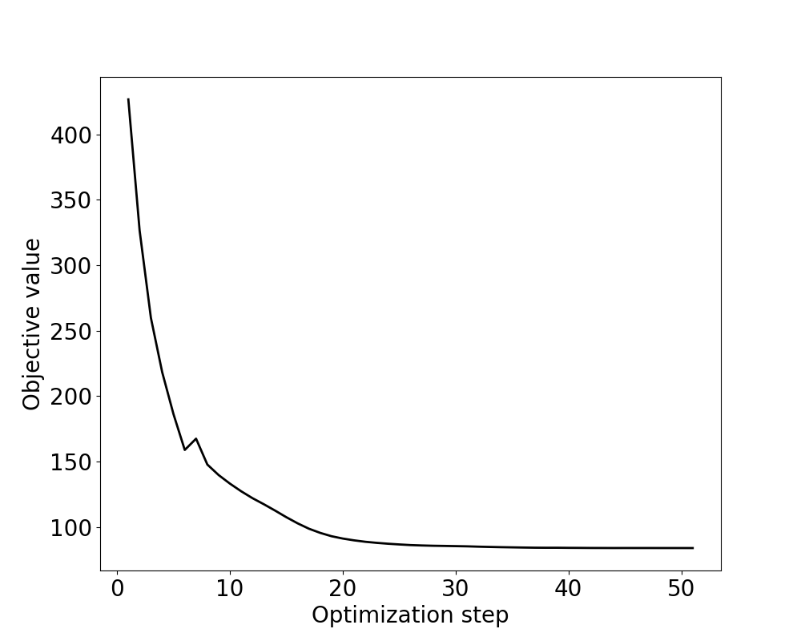

Topology optimization#
Problem definition#
We study compliance minimization of a 2D cantilever beam made of a linear elastic material. Following the classic Solid Isotropic Material with Penalization (SIMP) [1] method, the governing PDE is
where \(\boldsymbol{\sigma}\) is parametrized with \(\theta(\boldsymbol{x}) \in [0, 1]\), which is the spatially varying design density field. Specifically, we set the Young’s modulus \(E=E_{\textrm{min}} + \theta^p (E_{\textrm{max}} - E_{\textrm{min}})\) with \(p\) being the penalty exponent.
The weak form corresponding to the governing PDE states that for any test function \(\boldsymbol{v}\), the following equation must hold:
The compliance minimization problem states that
where \(\boldsymbol{u}^h(\boldsymbol{x}) = \sum_k \boldsymbol{U}[k] \boldsymbol{\phi}_k(\boldsymbol{x})\) is the finite element solution field constructed with the solution vector \(\boldsymbol{U}\). The design vector \(\boldsymbol{\Theta}\) is the discretized version of \(\theta\), and the constraint equation \(\boldsymbol{C}(\boldsymbol{U}, \boldsymbol{\Theta}) = \textbf{0}\) corresponds to the discretized weak form. The topology optimization problem is therefore a typical PDE-constrained optimization problem.
Implementation#
As one of its salient features, JAX-FEM allows users to solve such problems in a handy way. In this example, the external MMA optimizer [2] is adopted. The original optimization problem is reformulated in the following reduced form:
Note that \(\boldsymbol{U}\) is implicitly a function of \(\boldsymbol{\Theta}\). To call the MMA optimizer, we need to provide the total derivative \(\frac{\textrm{d}\widehat{J}}{\textrm{d}\boldsymbol{\Theta}}\), which is computed automatically with JAX-FEM. The adjoint method is used under the hood.
The MMA optimizer accepts constraints. For example, we may want to pose the volume constraint such that the material used for topology optimization cannot exceed a threshold value. Then the previous optimization problem is modified as the following
where \(\bar{v}\) is the upper bound of volume ratio. In this case, we need to pass \(\frac{\textrm{d}g}{\textrm{d}\boldsymbol{\Theta}}\) to the MMA solver as the necessary information to handle such constraint.
In certain scenario, constraint function may depend not only on the design variable, but also on the state variable, i.e., \(g(\boldsymbol{U},\boldsymbol{\Theta})\). For example, limiting the maximum von Mises stress globally over the domain could be such a constraint. This will be handled just fine with JAX-FEM. You may check our paper [3] for more details or the more advanced application examples in our repo.
We also want to point to an excellent educational paper on using JAX for topology optimization for your further information [4].
For the implementation, we first import some necessary modules and do some cleaning work：
[ ]:
# Import some useful modules.
import numpy as onp
import jax
import jax.numpy as np
import os
import glob
import matplotlib.pyplot as plt
# Import JAX-FEM specific modules.
from jax_fem.problem import Problem
from jax_fem.solver import solver, ad_wrapper
from jax_fem.utils import save_sol
from jax_fem.generate_mesh import get_meshio_cell_type, Mesh, rectangle_mesh
from jax_fem.mma import optimize
# Do some cleaning work. Remove old solution files.
data_path = os.path.join(os.path.dirname(__file__), 'data')
files = glob.glob(os.path.join(data_path, f'vtk/*'))
for f in files:
os.remove(f)
Weak form#
The definition of the plane stress problem is shown as follows:
[ ]:
# Define constitutive relationship.
# Generally, JAX-FEM solves -div.(f(u_grad,alpha_1,alpha_2,...,alpha_N)) = b.
# Here, we have f(u_grad,alpha_1,alpha_2,...,alpha_N) = sigma(u_grad, theta),
# reflected by the function 'stress'. The functions 'custom_init'and 'set_params'
# override base class methods. In particular, set_params sets the design variable theta.
class Elasticity(Problem):
def custom_init(self):
# Override base class method.
# Set up 'self.fe.flex_inds' so that location-specific TO can be realized.
self.fe = self.fes[0]
self.fe.flex_inds = np.arange(len(self.fe.cells))
def get_tensor_map(self):
def stress(u_grad, theta):
# Plane stress assumption
# Reference: https://en.wikipedia.org/wiki/Hooke%27s_law
Emax = 70.e3
Emin = 1e-3*Emax
nu = 0.3
penal = 3.
E = Emin + (Emax - Emin)*theta[0]**penal
epsilon = 0.5*(u_grad + u_grad.T)
eps11 = epsilon[0, 0]
eps22 = epsilon[1, 1]
eps12 = epsilon[0, 1]
sig11 = E/(1 + nu)/(1 - nu)*(eps11 + nu*eps22)
sig22 = E/(1 + nu)/(1 - nu)*(nu*eps11 + eps22)
sig12 = E/(1 + nu)*eps12
sigma = np.array([[sig11, sig12], [sig12, sig22]])
return sigma
return stress
def get_surface_maps(self):
def surface_map(u, x):
return np.array([0., 100.])
return [surface_map]
def set_params(self, params):
# Override base class method.
full_params = np.ones((self.fe.num_cells, params.shape[1]))
full_params = full_params.at[self.fe.flex_inds].set(params)
thetas = np.repeat(full_params[:, None, :], self.fe.num_quads, axis=1)
self.full_params = full_params
self.internal_vars = [thetas]
def compute_compliance(self, sol):
# Surface integral
boundary_inds = self.boundary_inds_list[0]
_, nanson_scale = self.fe.get_face_shape_grads(boundary_inds)
# (num_selected_faces, 1, num_nodes, vec) * # (num_selected_faces, num_face_quads, num_nodes, 1)
u_face = sol[self.fe.cells][boundary_inds[:, 0]][:, None, :, :] * self.fe.face_shape_vals[boundary_inds[:, 1]][:, :, :, None]
u_face = np.sum(u_face, axis=2) # (num_selected_faces, num_face_quads, vec)
# (num_selected_faces, num_face_quads, dim)
subset_quad_points = self.physical_surface_quad_points[0]
neumann_fn = self.get_surface_maps()[0]
traction = -jax.vmap(jax.vmap(neumann_fn))(u_face, subset_quad_points) # (num_selected_faces, num_face_quads, vec)
val = np.sum(traction * u_face * nanson_scale[:, :, None])
return val
where the function set_params and compute_compliance are used to input design parameters and compute the objective function, respectively.
Mesh#
Here we use the QUAD4 element to discretize the computational domain:
[ ]:
# Specify mesh-related information. We use first-order quadrilateral element.
ele_type = 'QUAD4'
cell_type = get_meshio_cell_type(ele_type)
Lx, Ly = 60., 30.
meshio_mesh = rectangle_mesh(Nx=60, Ny=30, domain_x=Lx, domain_y=Ly)
mesh = Mesh(meshio_mesh.points, meshio_mesh.cells_dict[cell_type])
Boundary conditions#
Then we can define the boundary conditions, where the left-side (\(x=0\)) is fixed and the bottom part of the right-side (\(x=L_x\)) is applied with tractions.
[ ]:
# Define boundary conditions and values.
def fixed_location(point):
return np.isclose(point[0], 0., atol=1e-5)
def load_location(point):
return np.logical_and(np.isclose(point[0], Lx, atol=1e-5), np.isclose(point[1], 0., atol=0.1*Ly + 1e-5))
def dirichlet_val(point):
return 0.
dirichlet_bc_info = [[fixed_location]*2, [0, 1], [dirichlet_val]*2]
location_fns = [load_location]
Problem#
We have completed all the preliminary preparations for the problem. Then we can proceed to create an instance of our BVP:
[ ]:
# Define forward problem.
problem = Elasticity(mesh, vec=2, dim=2, ele_type=ele_type, dirichlet_bc_info=dirichlet_bc_info, location_fns=location_fns)
Solver#
Similarly, we use the ad_wrapper to enable the differentiability of the solver and use the UMFPACK solver wrapped in scipy to solve the linear system involved in both the forward and inverse propagation.
[ ]:
# Apply the automatic differentiation wrapper.
# This is a critical step that makes the problem solver differentiable.
fwd_pred = ad_wrapper(problem, solver_options={'umfpack_solver': {}}, adjoint_solver_options={'umfpack_solver': {}})
Optimization#
For the optimization task, we first define the objective function and create handle functions for the MMA solver:
[ ]:
# Define the objective function 'J_total(theta)'.
# In the following, 'sol = fwd_pred(params)' basically says U = U(theta).
def J_total(params):
# J(u(theta), theta)
sol_list = fwd_pred(params)
compliance = problem.compute_compliance(sol_list[0])
return compliance
# Output solution files to local disk
outputs = []
def output_sol(params, obj_val):
print(f"\nOutput solution - need to solve the forward problem again...")
sol_list = fwd_pred(params)
sol = sol_list[0]
vtu_path = os.path.join(data_path, f'vtk/sol_{output_sol.counter:03d}.vtu')
save_sol(problem.fe, np.hstack((sol, np.zeros((len(sol), 1)))), vtu_path, cell_infos=[('theta', problem.full_params[:, 0])])
print(f"compliance = {obj_val}")
outputs.append(obj_val)
output_sol.counter += 1
output_sol.counter = 0
# Prepare J_total and dJ/d(theta) that are required by the MMA optimizer.
def objectiveHandle(rho):
# MMA solver requires (J, dJ) as inputs
# J has shape ()
# dJ has shape (...) = rho.shape
J, dJ = jax.value_and_grad(J_total)(rho)
output_sol(rho, J)
return J, dJ
# Prepare g and dg/d(theta) that are required by the MMA optimizer.
def consHandle(rho, epoch):
# MMA solver requires (c, dc) as inputs
# c should have shape (numConstraints,)
# dc should have shape (numConstraints, ...)
def computeGlobalVolumeConstraint(rho):
g = np.mean(rho)/vf - 1.
return g
c, gradc = jax.value_and_grad(computeGlobalVolumeConstraint)(rho)
c, gradc = c.reshape((1,)), gradc[None, ...]
return c, gradc
Then we can call the jax_fem.mma.optimize to solve the defined optimization problem:
[ ]:
# Finalize the details of the MMA optimizer, and solve the TO problem.
vf = 0.5
optimizationParams = {'maxIters':51, 'movelimit':0.1}
rho_ini = vf*np.ones((len(problem.fe.flex_inds), 1))
numConstraints = 1
optimize(problem.fe, rho_ini, optimizationParams, objectiveHandle, consHandle, numConstraints)
print(f"As a reminder, compliance = {J_total(np.ones((len(problem.fe.flex_inds), 1)))} for full material")
Postprocessing#
We then plot the objective function value in the optimization:
[ ]:
# Plot the optimization results.
obj = onp.array(outputs)
plt.figure(figsize=(10, 8))
plt.plot(onp.arange(len(obj)) + 1, obj, linestyle='-', linewidth=2, color='black')
plt.xlabel(r"Optimization step", fontsize=20)
plt.ylabel(r"Objective value", fontsize=20)
plt.tick_params(labelsize=20)
plt.tick_params(labelsize=20)
plt.show()
The change of the cell density can also be visualized by checking the generated VTK files (See the previous defined output_sol) using ParaView
Topology optimization iterations.

Objective funtion values.
Please refer to this link to download the source file.
References#
Bendsoe, Martin Philip, and Ole Sigmund. Topology optimization: theory, methods, and applications. Springer Science & Business Media, 2003.
Svanberg, Krister. “The method of moving asymptotes—a new method for structural optimization.” International journal for numerical methods in engineering 24.2 (1987): 359-373.
Xue, Tianju, et al. “JAX-FEM: A differentiable GPU-accelerated 3D finite element solver for automatic inverse design and mechanistic data science.” Computer Physics Communications (2023): 108802.
Chandrasekhar, Aaditya, Saketh Sridhara, and Krishnan Suresh. “Auto: a framework for automatic differentiation in topology optimization.” Structural and Multidisciplinary Optimization 64.6 (2021): 4355-4365.